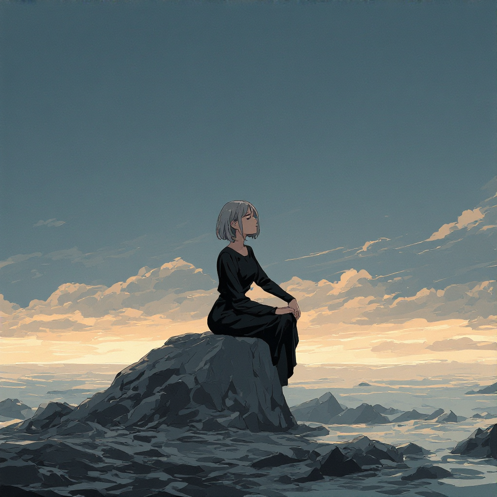
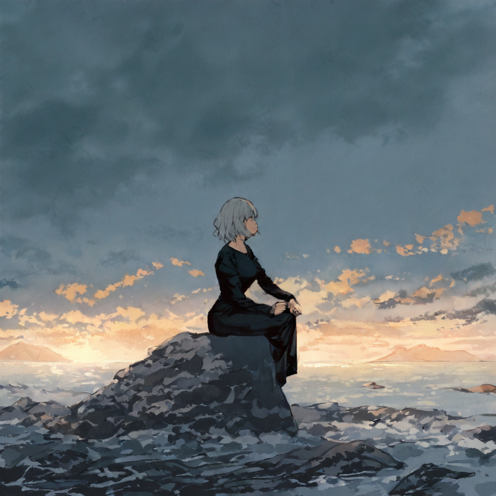
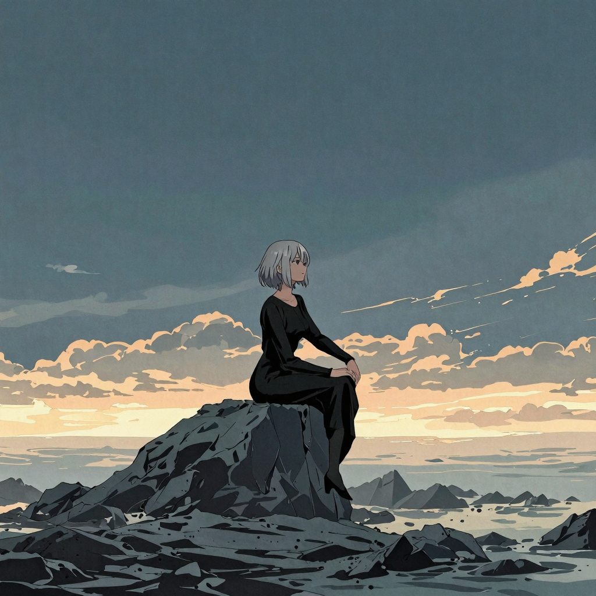
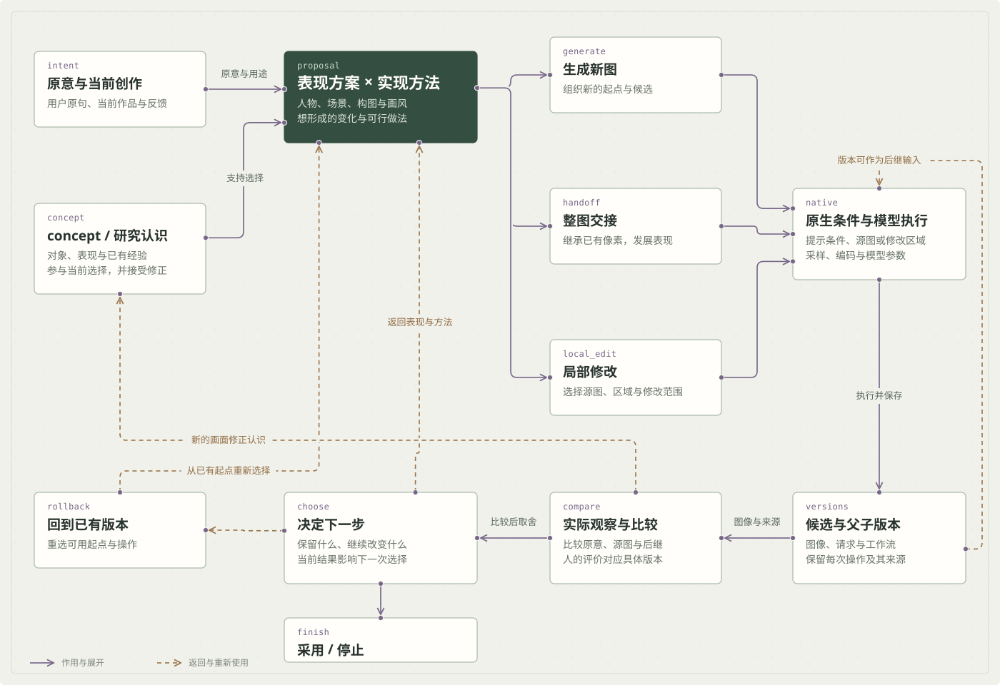
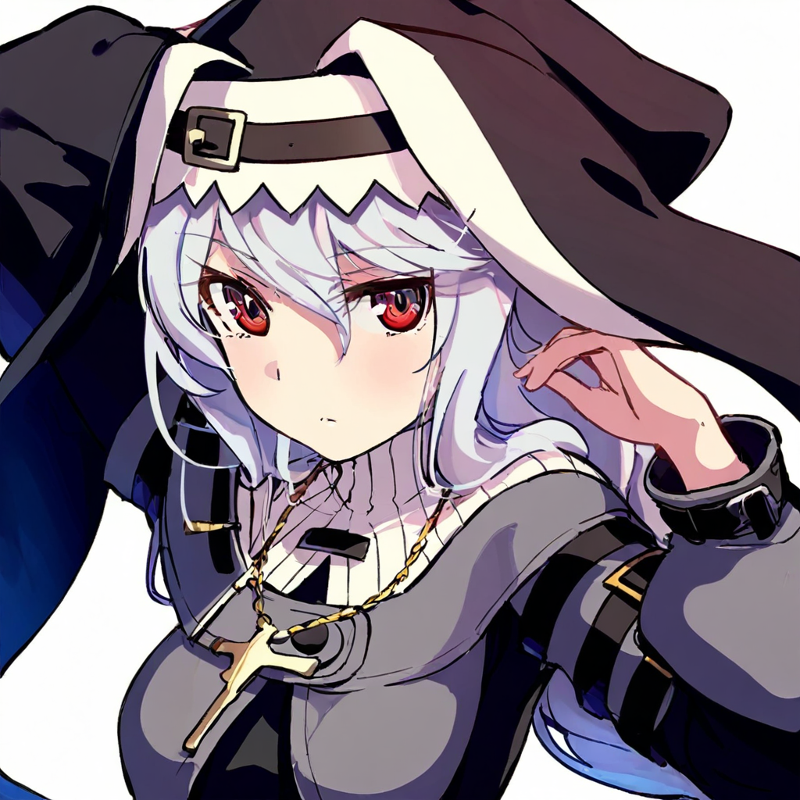

共同起点可以分支
上面的两种画法来自同一源图。后继记录各自的模型条件，比较时能回到确切起点。
让不同模型，参与同一个作品的发展。
我从已有画面出发，研究不同模型怎样继承构图、发展画法，再将这些选择接入一条保留原意、源图与版本的创作管线。


这次保留同一张 NewBie 源图，分别交给 Illustrious 和 Z-Image Turbo。主体、礁石和远景提供共同参照，观察重点落在轮廓、色块与环境的处理上。

两个分支直接使用这一张图，各自保留独立结果。

保留整体关系，继续发展明暗、边缘与环境质感。

比较人物、岩石与海面的处理，再选择要继续的方向。
共同源图 seed 42；两个独立后继的 denoise 均为 0.5。这里比较具体创作方向；各模型的参数含义和响应仍需分别适配。
继承什么、想改变哪里，会影响模型与操作的选择。因此我把源图、父子版本和当前反馈留在管线中：选定一个分支以后，还能继续修改，也能回到共同起点重选。
表现方案与实现方法共同选择；源图和反馈参与下一轮判断。整图交接是其中一条路径，局部修改、重开方案和采用作品，也有各自的位置。

上面的两种画法来自同一源图。后继记录各自的模型条件，比较时能回到确切起点。
“保留人物关系，继续改环境”的反馈，参与下一次方案与修改范围的选择。
用户原句、系统补充和历史方案保留来路，结果可以使当前选择被重新考虑。
Illustrious 源图提供构图基础，NewBie 整图交接与脸部细化共同参与后继，改变眼睛、表情和发丝表现。
实际配置：seed 42；整图交接强度 0.18，脸部细化 0.2。源图与后继可拖动比较。

图像来自已有生成模型。我的工作集中在创作系统、实验与选择，代码由 AI 协作推进。早期实验提供后续概念整理与管线设计的材料。
从图像创作，继续看信息研究